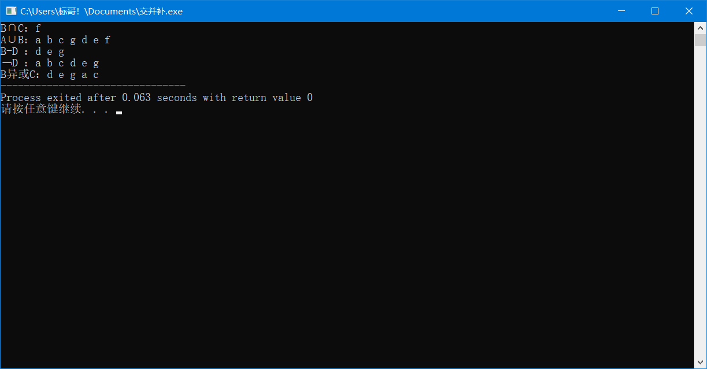
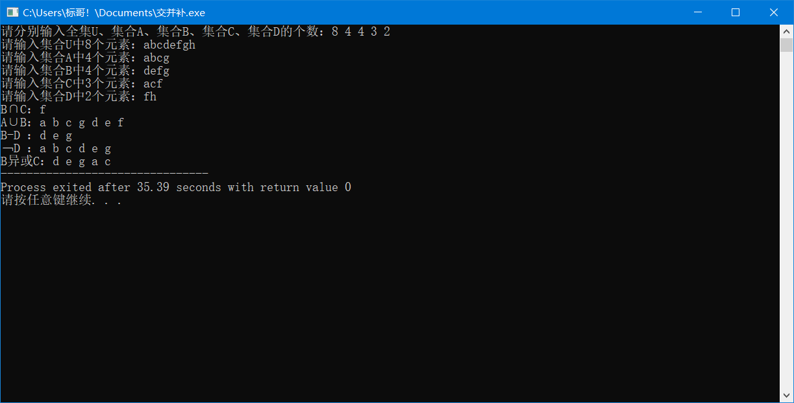

对集合的交并补运算、差运算及异或运算的代码，可输入字符与数字，内容简单，详情请看以下代码
#include<iostream> using namespace std; int main() { //全集u char u[] = {'a','b','c','d','e','f','g','h'}; char a[] = {'a','b','c','g'}; char b[] = {'d','e','f','g'}; char c[] = {'a','c','f'}; char d[] = {'f','h'}; ////--------------------以下内容可输入操作--------------------------- // cout << "请分别输入全集U、集合A、集合B、集合C、集合D的个数：" ; // int uu,aa,bb,cc,dd; // cin >> uu >> aa >> bb >> cc >> dd; // char u[uu],a[aa],b[bb],c[cc],d[dd]; // cout << "请输入集合U中" << uu << "个元素："; // cin >> u; // cout << "请输入集合A中" << aa << "个元素："; // cin >> a; // cout << "请输入集合B中" << bb << "个元素："; // cin >> b; // cout << "请输入集合C中" << cc << "个元素："; // cin >> c; // cout << "请输入集合D中" << dd << "个元素："; // cin >> d; ////--------------------以上内容可输入操作--------------------------- //交运算b交c int bn = sizeof(b); int cn = sizeof(c); cout << "B∩C："; for(int i = 0;i < bn;i++) { for(int j = 0;j < cn;j++) { if(b[i] == c[j]) { cout << b[i] << " "; } } } cout << endl; //并运算a并b int an = sizeof(a); cout << "A∪B："; for(int i = 0;i < an;i++)//并运算操作，先输出一个字符数组，再对另一个字符数组进行挑选 cout << a[i] << " "; for(int i = 0;i < bn;i++) { int flag = 1; for(int j = 0;j < an;j++) { if(b[i] == a[j])//两元素相同 ，则不需要该元素，因为之前已经输出过该元素了 { flag = 0; } } if(flag == 1) { cout << b[i] << " "; } } cout << endl; //差运算g = b - d int dn = sizeof(d); cout << "B-D ："; //差运算解释：在集合B中除去集合D中含有的元素 for(int i = 0;i < bn;i++)//两层循环对两个数组依次遍历，不符合差运算条件的即不输出跳过 { int flag = 1; for(int j = 0;j < dn;j++) { if(b[i] == d[j]) { flag = 0; } } if(flag == 1) { cout << b[i] << " "; } } // for(int i = 0;i < dn;i++) // { // int flag = 1; // for(int j = 0;j < bn;j++) // { // if(d[i] == b[j]) // { // flag = 0; // } // } // if(flag == 1) // { // cout << d[i] << " "; // } // } cout << endl; //非运算h=非d int un = sizeof(u); cout << "﹁D ："; for(int i = 0;i < un;i++)//非运算对全集u进行操作 { int flag = 1; for(int j = 0;j < dn;j++) { if(u[i] == d[j]) { flag = 0; } } if(flag == 1) { cout << u[i] << " "; } } cout << endl; //b异或c //异或运算的公式为 b异或c=（b-c）并上（c-b） //解决集合异或问题，将分为两步进行 //b-c // cout << "B-C ："; cout << "B异或C："; int m = 0; char zuo[m];//定义集合b-集合c，将结果存储在字符数组zuo中 for(int i = 0;i < bn;i++) { int flag = 1; for(int j = 0;j < cn;j++) { if(b[i] == c[j])//如果两个元素相同，则说明重复了，此if语句为了排出重复元素的 { flag = 0; } } if(flag == 1) { zuo[m++] = b[i];//将满足条件的元素记录并输出 cout << b[i] << " "; } } // for(int i = 0;i < m;i++) // cout << zuo[i] << " "; // cout << endl; //c-b // cout << "C-B ："; for(int i = 0;i < cn;i++)//计算出集合C-集合B，在过程中对满足条件的元素继续进行判断，看是否与集合B-集合C中的元素重复 { int flag = 1; for(int j = 0;j < bn;j++) { if(c[i] == b[j])//同上 { flag = 0; } } if(flag == 1)//对已满足集合C-集合B的元素继续判断是否与zuo数组中的元素是否有相同的，以下步骤即为合并俩集合并且输出 { int flag1 = 1; for(int k = 0;k < m;k++) { if(zuo[k] == c[i]) flag1 = 0; } if(flag == 1) cout << c[i] << " "; // you[n++] = c[i]; // cout << c[i] << " "; } } // for(int i = 0;i < n;i++) // cout << you[i] << " "; return 0; }
静态运行结果：
动态运行结果：
此代码为实验的要求，我用了一整个晚上的时间去实现这个我理想的目的，勉勉强强算是完成了
最重要的是在于对离散数学中，集合的交并补、差运算、异或运算的理解，重在理解与应用，才能抽象出模型
代码有点乱，但是思路还是在那的，认真看应该能理解。